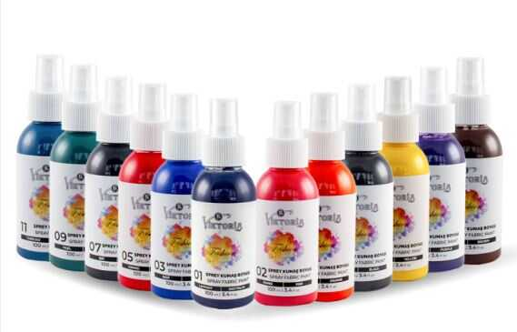

Viktoria Paltar Boyaları
Azərbaycanda ən geniş rəng çeşidi.
60 fərqli rəng • Xlor ləkəsini boyamaq • Rəngi solmuş paltarı boyamaq • Uniformaları, habelə polis formalarını boyamaq
Rənglərə bax
Azərbaycanda ən geniş rəng çeşidi.
60 fərqli rəng • Xlor ləkəsini boyamaq • Rəngi solmuş paltarı boyamaq • Uniformaları, habelə polis formalarını boyamaq
Rənglərə bax
Azərpoçt ilə Bakı və bütün bölgələrə çatdırılma. Bakıya təxmini 2 iş günü, bölgələrə 3-4 iş günü ərzində çatır. Minimum sifariş 2 ədəd. 5 ədəddən yuxarı sifarişlərdə çatdırılma pulsuzdur. Sifarişlər, sifariş olunan günün ertəsi iş günü poçta verilir. Poçt qəbzini göndəririk, Azərpoçt rəsmi www.azems.az saytında izləmə kodu ilə təqib edə bilərsiz.
Viktoria Boya, 1901-ci ildən günümüzə qədər yüksək keyfiyyətli toz boyalar və tekstil məhsulları ilə ev və sənaye istifadəsinə xidmət edən aparıcı şirkətlərdən biridir.
Azərbaycanda rəngi solmuş və istifadəyə yararsız kimi görünən paltarların ev şəraitində asan və təhlükəsiz şəkildə boyanaraq yenidən istifadəyə qaytarılmasını təmin etmək, həm ailə büdcəsinə qənaət etmək, həm də ekoloji baxımdan daha davamlı istehlak vərdişlərini təşviq etmək məqsədi daşıyır. Bu yanaşma paltarların ömrünü uzadır, israfın qarşısını alır və insanlara geyimlərini yenidən dəyərləndirmə imkanı yaradır.
Paltar, ayaqqabı, çanta, denim və digər parçaları boyamaq üçün istifadə olunur. Spreyi yaxın məsafədən səpilməməsi üçün 20–25 sm aralı püskürtmək tövsiyə olunur.
1 paket boya əgər öz rənginə boyayırsınızsa təxminən 2 cins şalvara bəs edir, ancaq rəng dəyişəndə, misal üçün göy rəngi qaraya boyayanda 1 şalvara 1 paket boya gedəcək. Boyama qaydalarını dəqiq öyrənmək üçün məhsulun arxasındakı təlimatları oxumaq, rəsmi satıcı saytlarındakı bələdçilərə və bloq yazılarına baxmaq tövsiyə olunur. Düzgün üsul və material seçimi rəngin daha qalıcı və bərabər olmasını təmin edir.
 Instagram
Instagram